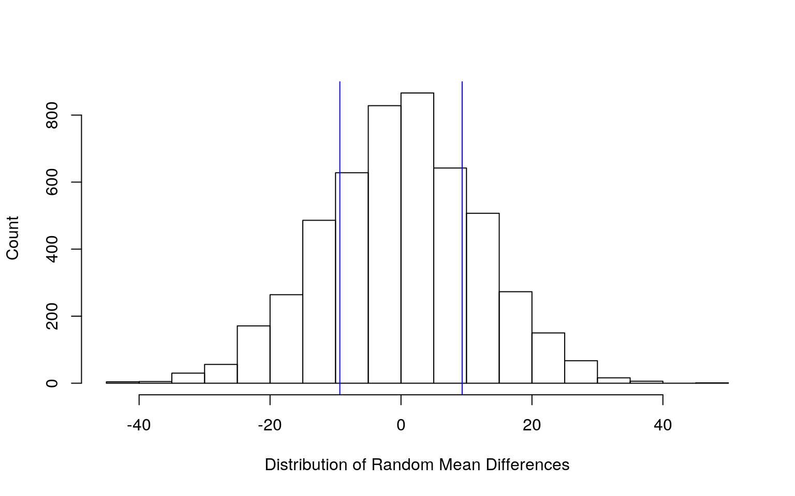
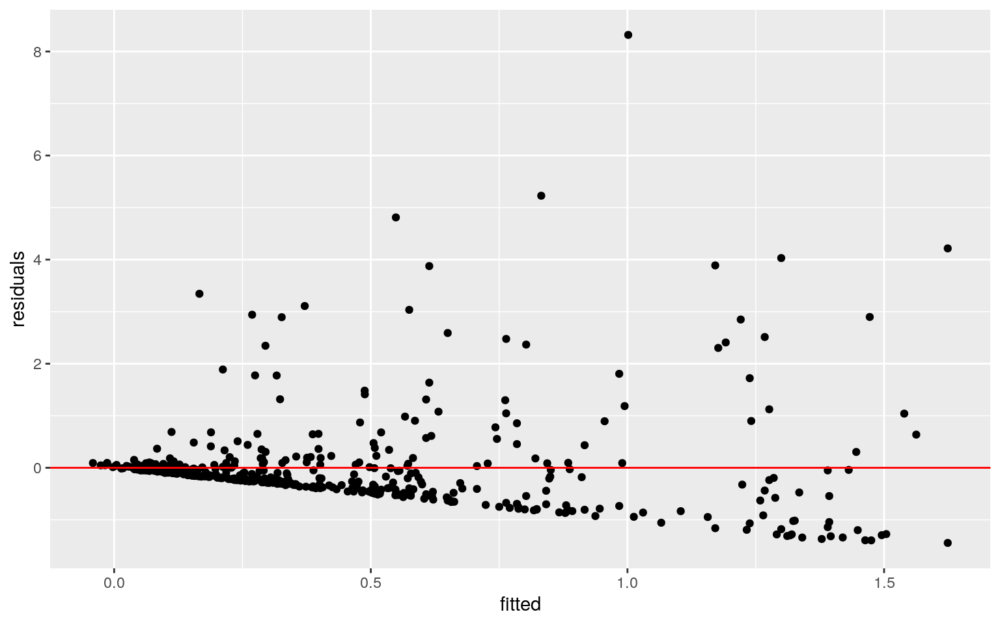
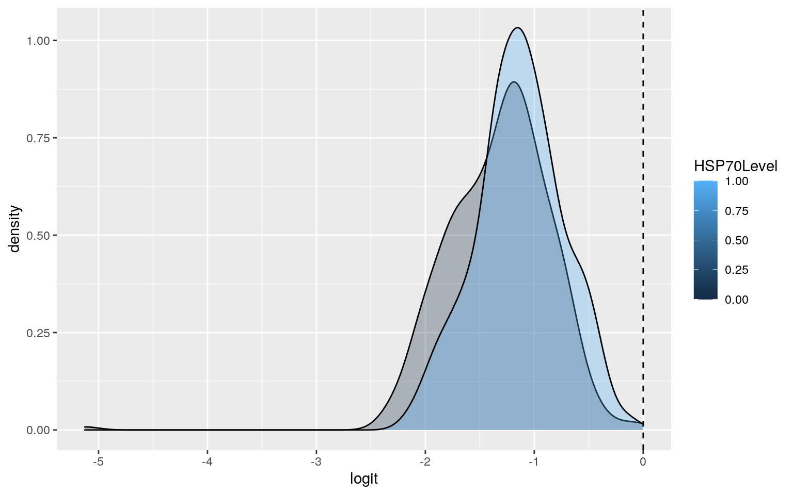
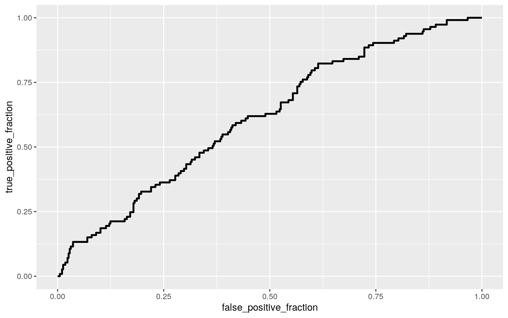
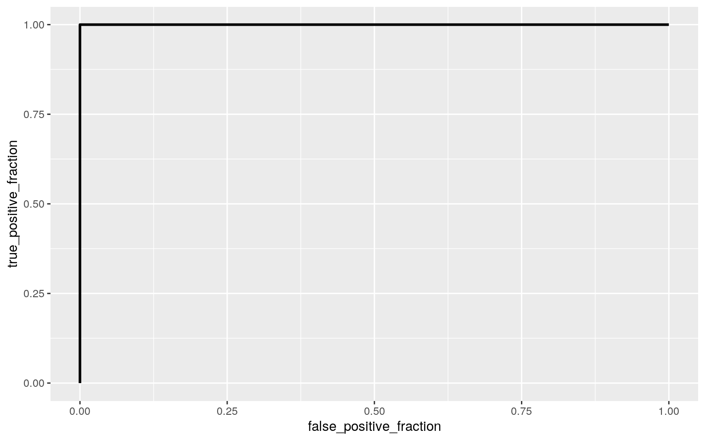

For this project, I decided to look at the abundance of heat shock protein 70 (HSP70) in the muscle tissue of Chinook Salmon dependant on the transcription level of 12 candidate genes in different areas of Alaska. I chose to use this dataset because I was interested in how researchers could analyze data from genes. Specifically, I wanted to better understand how they could determine which genes play a role in the amount of proteins that end up being translated. The dataset I found shows the location at which the salmon were captured, the salmon's length in millimeters, the relative transcription levels of 12 genes, and the abundance of HSP70 in the salmon. The dataset contains 499 observations and contains no NAs for any variable. I intend to use the salmon's location as my categorical variable, which contains 8 different groups. I do not know much about the areas that the researchers surveyed for their salmon, so I decided to look at where they are located on Google Maps. I believe that the areas that are more inland, Chena River and Salcha River, will have higher levels of HSP70 because the temperature on the coasts are more stable. Additionally, I do not know much about the genes that the researchers looked at, but I believe that these areas will also have lower transcription levels of HSP27, HSP70, and HSP90 since these are all genes for heat shock proteins including the gene for HSP70 itself. I will make a binary categorical variable for salmons that have above or below average HSP70 protein levels. The dataset also contains information about the salmon's unique ID, capture date, and some were given an experimental treatment. I do not need the salmon's ID or capture date for my data analysis, and while the experimental treatment involves placing the fish into different temperature environments, only 22 fish of the 499 were treated which is not sufficient for my analysis.
library(readr)
library(tidyverse)
library(rstatix)
library(sandwich)
library(lmtest)
library(plotROC)
library(glmnet)
set.seed(1)
#Preparing Dataset
ChinookSalmon_heatstress_YukonAK_vonBiela_2016_2018 <- read_csv("ChinookSalmon_heatstress_YukonAK_vonBiela_2016_2018.csv")
ProjectDF <- ChinookSalmon_heatstress_YukonAK_vonBiela_2016_2018 %>% select(-c(FishID,CaptureDate,Treatment)) %>% mutate(HSP70Level = ifelse(HSP70Protein>mean(HSP70Protein),1,0))
#Testing Assumptions
group <- ProjectDF$Location
DVs <- ProjectDF %>% select(Lengthmm,HSP27,HSP70,HSP90,HSP70Protein)
sapply(split(DVs,group), mshapiro_test)## Chena River Eagle Test Fishery East Fork Andreafsky
River Emmonak Test Fishery
## statistic 0.7986328 0.1955422 0.8132405 0.8952187
## p.value 5.089788e-09 4.717e-18 4.652426e-09 5.45333e-06
## Gisasa River Pilot Station Rapids Fish Wheel Salcha
River
## statistic 0.6136593 0.4754621 0.4514487 0.8092873
## p.value 6.32121e-13 7.795192e-08 1.251354e-14 0.01879703#MANOVA
manova <- manova(cbind(Lengthmm,HSP27,HSP70,HSP90,HSP70Protein)~Location,data = ProjectDF)
summary(manova)## Df Pillai approx F num Df den Df Pr(>F)
## Location 7 1.0396 18.413 35 2455 < 2.2e-16 ***
## Residuals 491
## ---
## Signif. codes: 0 '***' 0.001 '**' 0.01 '*' 0.05 '.' 0.1
' ' 1#Univariate ANOVAs
summary.aov(manova)## Response Lengthmm :
## Df Sum Sq Mean Sq F value Pr(>F)
## Location 7 1483437 211920 21.894 < 2.2e-16 ***
## Residuals 491 4752577 9679
## ---
## Signif. codes: 0 '***' 0.001 '**' 0.01 '*' 0.05 '.' 0.1
' ' 1
##
## Response HSP27 :
## Df Sum Sq Mean Sq F value Pr(>F)
## Location 7 922.6 131.800 36.288 < 2.2e-16 ***
## Residuals 491 1783.4 3.632
## ---
## Signif. codes: 0 '***' 0.001 '**' 0.01 '*' 0.05 '.' 0.1
' ' 1
##
## Response HSP70 :
## Df Sum Sq Mean Sq F value Pr(>F)
## Location 7 244.28 34.897 35.073 < 2.2e-16 ***
## Residuals 491 488.52 0.995
## ---
## Signif. codes: 0 '***' 0.001 '**' 0.01 '*' 0.05 '.' 0.1
' ' 1
##
## Response HSP90 :
## Df Sum Sq Mean Sq F value Pr(>F)
## Location 7 251.03 35.861 12.749 4.434e-15 ***
## Residuals 491 1381.07 2.813
## ---
## Signif. codes: 0 '***' 0.001 '**' 0.01 '*' 0.05 '.' 0.1
' ' 1
##
## Response HSP70Protein :
## Df Sum Sq Mean Sq F value Pr(>F)
## Location 7 56.73 8.1040 9.2643 8.622e-11 ***
## Residuals 491 429.51 0.8748
## ---
## Signif. codes: 0 '***' 0.001 '**' 0.01 '*' 0.05 '.' 0.1
' ' 1#Pairwise T-Tests
pairwise.t.test(ProjectDF$Lengthmm,ProjectDF$Location,p.adj = "none")##
## Pairwise comparisons using t tests with pooled SD
##
## data: ProjectDF$Lengthmm and ProjectDF$Location
##
## Chena River Eagle Test Fishery East Fork Andreafsky
River
## Eagle Test Fishery 3.9e-05 - -
## East Fork Andreafsky River 0.00552 1.1e-11 -
## Emmonak Test Fishery 2.8e-05 0.95332 3.3e-12
## Gisasa River 0.00041 1.4e-13 0.38837
## Pilot Station 0.31288 0.07727 0.00473
## Rapids Fish Wheel 4.0e-06 < 2e-16 0.03912
## Salcha River 0.21443 0.00129 0.95900
## Emmonak Test Fishery Gisasa River Pilot Station Rapids
Fish Wheel
## Eagle Test Fishery - - - -
## East Fork Andreafsky River - - - -
## Emmonak Test Fishery - - - -
## Gisasa River 3.7e-14 - - -
## Pilot Station 0.07962 0.00083 - -
## Rapids Fish Wheel < 2e-16 0.23088 4.2e-05 -
## Salcha River 0.00131 0.64996 0.08380 0.29941
##
## P value adjustment method: nonepairwise.t.test(ProjectDF$HSP27,ProjectDF$Location,p.adj = "none")##
## Pairwise comparisons using t tests with pooled SD
##
## data: ProjectDF$HSP27 and ProjectDF$Location
##
## Chena River Eagle Test Fishery East Fork Andreafsky
River
## Eagle Test Fishery 0.63811 - -
## East Fork Andreafsky River 0.00058 0.00012 -
## Emmonak Test Fishery < 2e-16 6.7e-15 < 2e-16
## Gisasa River 0.00037 7.8e-05 0.82617
## Pilot Station 1.2e-05 5.5e-05 5.0e-11
## Rapids Fish Wheel 0.00048 0.00011 0.81008
## Salcha River 0.59275 0.75962 0.03171
## Emmonak Test Fishery Gisasa River Pilot Station Rapids
Fish Wheel
## Eagle Test Fishery - - - -
## East Fork Andreafsky River - - - -
## Emmonak Test Fishery - - - -
## Gisasa River < 2e-16 - - -
## Pilot Station 0.21018 3.3e-11 - -
## Rapids Fish Wheel < 2e-16 0.97889 5.1e-11 -
## Salcha River 0.00043 0.02529 0.02057 0.02541
##
## P value adjustment method: nonepairwise.t.test(ProjectDF$HSP70,ProjectDF$Location,p.adj = "none")##
## Pairwise comparisons using t tests with pooled SD
##
## data: ProjectDF$HSP70 and ProjectDF$Location
##
## Chena River Eagle Test Fishery East Fork Andreafsky
River
## Eagle Test Fishery 1.9e-07 - -
## East Fork Andreafsky River 0.0117 0.0038 -
## Emmonak Test Fishery 5.8e-05 < 2e-16 5.4e-11
## Gisasa River 1.4e-10 0.2405 3.5e-05
## Pilot Station 2.6e-07 < 2e-16 1.4e-11
## Rapids Fish Wheel 2.8e-11 0.1146 8.3e-06
## Salcha River 0.4115 0.0853 0.7230
## Emmonak Test Fishery Gisasa River Pilot Station Rapids
Fish Wheel
## Eagle Test Fishery - - - -
## East Fork Andreafsky River - - - -
## Emmonak Test Fishery - - - -
## Gisasa River < 2e-16 - - -
## Pilot Station 0.0098 < 2e-16 - -
## Rapids Fish Wheel < 2e-16 0.6580 < 2e-16 -
## Salcha River 0.0066 0.0218 6.6e-05 0.0127
##
## P value adjustment method: nonepairwise.t.test(ProjectDF$HSP90,ProjectDF$Location,p.adj = "none")##
## Pairwise comparisons using t tests with pooled SD
##
## data: ProjectDF$HSP90 and ProjectDF$Location
##
## Chena River Eagle Test Fishery East Fork Andreafsky
River
## Eagle Test Fishery 7.9e-05 - -
## East Fork Andreafsky River 4.3e-07 0.33983 -
## Emmonak Test Fishery 6.4e-05 0.93782 0.28534
## Gisasa River 2.8e-06 0.49134 0.80110
## Pilot Station 2.0e-05 1.3e-11 8.0e-14
## Rapids Fish Wheel 0.00012 0.97010 0.32769
## Salcha River 0.26859 0.41603 0.20234
## Emmonak Test Fishery Gisasa River Pilot Station Rapids
Fish Wheel
## Eagle Test Fishery - - - -
## East Fork Andreafsky River - - - -
## Emmonak Test Fishery - - - -
## Gisasa River 0.42980 - - -
## Pilot Station 9.8e-12 4.6e-13 - -
## Rapids Fish Wheel 0.96952 0.47393 2.1e-11 -
## Salcha River 0.43425 0.25018 0.00024 0.42840
##
## P value adjustment method: nonepairwise.t.test(ProjectDF$HSP70Protein,ProjectDF$Location,p.adj = "none")##
## Pairwise comparisons using t tests with pooled SD
##
## data: ProjectDF$HSP70Protein and ProjectDF$Location
##
## Chena River Eagle Test Fishery East Fork Andreafsky
River
## Eagle Test Fishery 0.00209 - -
## East Fork Andreafsky River 0.00045 9.7e-11 -
## Emmonak Test Fishery 0.04638 0.24109 3.2e-08
## Gisasa River 0.64253 0.00909 7.8e-05
## Pilot Station 0.11888 0.60574 0.00012
## Rapids Fish Wheel 0.00602 0.77646 1.1e-09
## Salcha River 0.09213 0.84905 0.00089
## Emmonak Test Fishery Gisasa River Pilot Station Rapids
Fish Wheel
## Eagle Test Fishery - - - -
## East Fork Andreafsky River - - - -
## Emmonak Test Fishery - - - -
## Gisasa River 0.13073 - - -
## Pilot Station 0.79382 0.21184 - -
## Rapids Fish Wheel 0.38845 0.02226 0.75043 -
## Salcha River 0.45095 0.14388 0.61889 0.74099
##
## P value adjustment method: none#Type 1 Error and Correction
1-.95^146## [1] 0.9994407.05/146## [1] 0.0003424658For my MANOVA, I decided to test if the mean of the variables; length of the salmon, the transcription levels of HSP27, HSP70, or HSP90; and the amount of HSP70 protein was different amongst any of the different locations the researchers surveyed. After running the MANOVA, I found that at least one of these variables' means varied amongst the different locations. Next, I looked at the univariate ANOVAs for each numeric variable and location to see which variables' means actually differed amongst the different locations. I found that all of the variables differed for at least of the locations. In order to determine which locations that the variables' means actually differed at, I ran pairwise t-tests for each of my variables and the locations. For these tests, I ran 28 t-tests for each of my 5 variables for a total of 140 t-tests, 5 univariate ANOVAs, and 1 MANOVA, which makes a total of 146 tests. With an alpha level of .05, this means that I had a 99.94% chance of making a type I error, which means I most likely made at least one type I error during these tests. In order to correct for this, I used the bonferroni correction and adjusted my alpha value to .00034.
After using this new alpha value, the mean length differs between Chena River and Eagle Test Fishery, Chena River and Emmonak Test Fishery, Chena River and Rapids Fish Wheel, Eagle Test Fishery and Emmonak Test Fishery, Eagle Test Fishery and Gisasa River, Eagle Test Fishery and Rapids Fish Wheel, East Fork Andreafsky River and Emmonak Test Fishery, Emmonak Test Fishery and Gisasa River, Emmonak Test Fishery and Rapids Fish Wheel, Pilot Station and Rapids Fish Wheel.
The mean HSP27 transcription level differs between Chena River and Emmonak Test Fishery, Chena River and Pilot Station, Eagle Test Fishery and East Fork Adreafsky River, Eagle Test Fishery and Emmonak Test Fishery, Eagle Test Fishery and Gisasa River, Eagle Test Fishery and Pilot Station, Eagle Test Fishery and Rapids Fish Wheel, East Fork Andreafsky River and Emmonak Test Fishery, East Fork Andreafsky River and Pilot Station, Emmonak Test Fishery and Gisasa River, Emmonak Test Fishery and Rapids Fish Wheel, and Gisasa River and Pilot Station.
The mean HSP70 transcription level differs between Chena River and Eagle Test Fishery, Chena River and Emmonak Test Fishery, Chena River and Gisasa River, Chena River and Pilot Station, Chena River and Rapids Fish Wheel, Eagle Test Fishery and Emmonak Test Fishery, Eagle Test Fishery and Pilot Station, East Fork Andreafsky River and Emmonak Test Fishery, East Fork Andreafsky River and Gisasa River, East Fork Andreafsky River and Pilot Station, Emmonak Test Fishery and Gisasa River, Emmonak Test Fishery and Rapids Fish Wheel, Gisasa River and Pilot Station, Pilot Station and Rapids Fish Wheel, and Pilot Station and Salcha River.
The mean HSP90 transcription level differs between Chena River and Eagle Test Fishery, Chena River and East Fork Andreafsky River, Chena River and Emmonak Test Fishery, Chena River and Gisasa River, Chena River and Pilot Station, Chena River and Rapids Fish Wheel, Eagle Test Fishery and Pilot Station, East Fork Andreafsky River and Pilot Station, Emmonak Test Fishery and Pilot Station, Pilot Station and Rapids Fish Wheel, and Pilot Station and Salcha River.
The mean amount of HSP70 protein differs Chena River and East Fork Andreafsky River, Eagle Test Fishery and East Fork Adreafsky River, East Fork Andreafsky River and Emmonak Test Fishery, East Fork Andreafsky River and Gisasa River, East Fork Andreafsky River and Pilot Station, East Fork Andreafsky River and Pilot Station, and East Fork Andreafsky River and Rapids Fish Wheel.
While testing for MANOVA assumptions, my test for multivariate normality failed, which means that my numeric variables are not normally distributed amongst each group. This could be an issue because a non-normal distribution causes the mean of the numeric variable to be heavily skewed, which makes it hard to make strong conclusions when assessing if the means for these variables are different amongst the different groups.
#Actual Mean Difference in Length
ProjectDF %>% group_by(HSP70Level) %>% summarize(MeanLength=mean(Lengthmm)) %>% summarize(MeanDiff=diff(MeanLength))## # A tibble: 1 x 1
## MeanDiff
## <dbl>
## 1 9.34#Randomization Test
rand_dist<-vector()
for(i in 1:5000){
new<-data.frame(Lengthmm=sample(ProjectDF$Lengthmm),Level=ProjectDF$HSP70Level)
rand_dist[i]<-mean(new[new$Level==1,]$Lengthmm)-
mean(new[new$Level==0,]$Lengthmm)}
mean(rand_dist > 9.3397 | rand_dist < -9.3397)## [1] 0.4358#Visualization
hist(rand_dist,main = "",ylab = "Count",xlab = "Distribution of Random Mean Differences"); abline(v = c(9.3397,-9.3397),col="blue")
For my randomization test, I decided to determine if there was a mean difference in length between salmon that have above average levels of HSP70 protein and salmon that have below average levels of HSP70 protein. The actual mean difference between these fish is 9.3397 mm. My randomization test first scrambled the length values for the different fish then calculated the mean difference in length for fish that have above average HSP70 protein levels and fish that have below average HSP70 protein levels for each randomized sample and saved them into a vector. I calculated the two-tailed p-value for my randomization test by finding the proportion of mean differences that have a magnitude greater than 9.3397 mm in the vector containing mean differences. My p-value was .4358, which means that there is not a significant difference in mean length between fish that have above average and below average HSP70 protein levels.
#Mean Centering Length
ProjectDF1 <- ProjectDF
ProjectDF1$Lengthmm_c <- ProjectDF1$Lengthmm - mean(ProjectDF1$Lengthmm)
#Linear Regression Model
fit <- lm(HSP70Protein ~ Lengthmm_c * Location, data = ProjectDF1)
summary(fit)##
## Call:
## lm(formula = HSP70Protein ~ Lengthmm_c * Location, data
= ProjectDF1)
##
## Residuals:
## Min 1Q Median 3Q Max
## -1.4440 -0.3335 -0.1251 0.0223 8.3185
##
## Coefficients:
## Estimate Std. Error t value Pr(>|t|)
## (Intercept) 5.548e-01 1.043e-01 5.321 1.58e-07 ***
## Lengthmm_c 2.997e-03 1.186e-03 2.527 0.0118 *
## LocationEagle Test Fishery -4.011e-01 1.829e-01 -2.192
0.0288 *
## LocationEast Fork Andreafsky River 6.404e-01 1.481e-01
4.323 1.87e-05 ***
## LocationEmmonak Test Fishery -3.176e-01 1.628e-01 -1.951
0.0516 .
## LocationGisasa River -1.352e-02 1.575e-01 -0.086 0.9316
## LocationPilot Station -2.731e-01 2.343e-01 -1.165 0.2444
## LocationRapids Fish Wheel -3.615e-01 1.674e-01 -2.160
0.0313 *
## LocationSalcha River -5.114e-01 3.317e-01 -1.542 0.1238
## Lengthmm_c:LocationEagle Test Fishery -3.714e-03
1.873e-03 -1.983 0.0479 *
## Lengthmm_c:LocationEast Fork Andreafsky River -7.422e-05
1.491e-03 -0.050 0.9603
## Lengthmm_c:LocationEmmonak Test Fishery -2.420e-03
1.568e-03 -1.543 0.1234
## Lengthmm_c:LocationGisasa River -2.221e-03 1.586e-03
-1.401 0.1619
## Lengthmm_c:LocationPilot Station -5.096e-03 2.699e-03
-1.888 0.0596 .
## Lengthmm_c:LocationRapids Fish Wheel -2.330e-03
1.542e-03 -1.511 0.1314
## Lengthmm_c:LocationSalcha River -2.956e-03 3.505e-03
-0.843 0.3995
## ---
## Signif. codes: 0 '***' 0.001 '**' 0.01 '*' 0.05 '.' 0.1
' ' 1
##
## Residual standard error: 0.9248 on 483 degrees of
freedom
## Multiple R-squared: 0.1504, Adjusted R-squared: 0.124
## F-statistic: 5.698 on 15 and 483 DF, p-value: 7.789e-11#Checking Assumptions
residuals <- fit$residuals
fitted <- fit$fitted.values
ggplot()+geom_point(aes(fitted,residuals))+geom_hline(yintercept=0, color='red')
shapiro.test(residuals)##
## Shapiro-Wilk normality test
##
## data: residuals
## W = 0.65278, p-value < 2.2e-16bptest(fit)##
## studentized Breusch-Pagan test
##
## data: fit
## BP = 32.772, df = 15, p-value = 0.005047#Robust Standard Errors
coeftest(fit, vcov = vcovHC(fit))##
## t test of coefficients:
##
## Estimate Std. Error t value Pr(>|t|)
## (Intercept) 0.55480913 0.09716826 5.7098 1.978e-08 ***
## Lengthmm_c 0.00299658 0.00085711 3.4961 0.0005156 ***
## LocationEagle Test Fishery -0.40110557 0.14289830
-2.8069 0.0052038 **
## LocationEast Fork Andreafsky River 0.64041040 0.22553096
2.8396 0.0047080 **
## LocationEmmonak Test Fishery -0.31756837 0.11624084
-2.7320 0.0065260 **
## LocationGisasa River -0.01352299 0.14349871 -0.0942
0.9249594
## LocationPilot Station -0.27309087 0.17453353 -1.5647
0.1183105
## LocationRapids Fish Wheel -0.36153327 0.10974792 -3.2942
0.0010595 **
## LocationSalcha River -0.51137239 0.09771473 -5.2333
2.487e-07 ***
## Lengthmm_c:LocationEagle Test Fishery -0.00371407
0.00116104 -3.1989 0.0014701 **
## Lengthmm_c:LocationEast Fork Andreafsky River
-0.00007422 0.00166701 -0.0445 0.9645061
## Lengthmm_c:LocationEmmonak Test Fishery -0.00242029
0.00096618 -2.5050 0.0125729 *
## Lengthmm_c:LocationGisasa River -0.00222130 0.00128688
-1.7261 0.0849675 .
## Lengthmm_c:LocationPilot Station -0.00509556 0.00198511
-2.5669 0.0105616 *
## Lengthmm_c:LocationRapids Fish Wheel -0.00233045
0.00090127 -2.5857 0.0100091 *
## Lengthmm_c:LocationSalcha River -0.00295598 0.00086324
-3.4243 0.0006689 ***
## ---
## Signif. codes: 0 '***' 0.001 '**' 0.01 '*' 0.05 '.' 0.1
' ' 1For my linear regression model, I decided to see how the abundance of HSP70 protein varies with length and location of the salmon. I first mean-centered length to get a better idea of how length affects HSP70 protein levels.
For my coefficients, I found that for salmon from Chena River, every 1 mm increase in length above the mean increases the HSP70 protein levels by .002997, on average. For fish with an average length, being found in Eagle Test Fishery decreases HSP70 protein levels by .4011 compared to fish from Chena River, on average. For fish with an average length, being found in East Fork Andreafsky River increases HSP70 protein levels by .6404 compared to fish from Chena River, on average. For fish with an average length, being found in Emmonak Test Fishery decreases HSP70 protein levels by .3176 compared to fish from Chena River, on average. For fish with an average length, being found in Gisasa River decreases HSP70 protein levels by .01352 compared to fish from Chena River, on average. For fish with an average length, being found in Pilot Station decreases HSP70 protein levels by .2731 compared to fish from Chena River, on average. For fish with an average length, being found in Rapids Fish Wheel decreases HSP70 protein levels by .3615 compared to fish from Chena River, on average. For fish with an average length, being found in Salcha River decreases HSP70 protein levels by .5114 compared to fish from Chena River, on average. The effect of length on HSP70 protein levels is .003714 lower for fish from Eagle Test Fishery compared to fish from Chena River. The effect of length on HSP70 protein levels is .0000742 lower for fish from East Fork Andreafsky River compared to fish from Chena River. The effect of length on HSP70 protein levels is .00242 lower for fish from Emmonak Test Fishery compared to fish from Chena River. The effect of length on HSP70 protein levels is .002221 lower for fish from Gisasa River compared to fish from Chena River. The effect of length on HSP70 protein levels is .005096 lower for fish from Pilot Station compared to fish from Chena River. The effect of length on HSP70 protein levels is .00233 lower for fish from Rapids Fish Wheel compared to fish from Chena River. The effect of length on HSP70 protein levels is .002956 lower for fish from Salcha River compared to fish from Chena River.
When testing the assumptions for a linear regression, my model failed the tests for linearity, normailty, and homoskedacity. This means that my explanatory and response variables did not have a linear relationship between them, my residuals were not normally distributed, and there was not equal variance of points along the regression line.
After using robust standard errors, many more of my coefficients became significant. Initially, only the salmon's length, its location being Eagle Test Fishery, East Fork Andreafsky River, or Rapids Fish Wheel, and the interaction between length and being from Eagle Test Fishery had a significant effect on the HSP70 protein levels. Now, being from Emmonak Test Fishery or Salcha River and the interaction between length and Emmonak Test Fishery, length and Pilot Station, length and Rapids Fish Wheel, and length and Salcha River all have a significant effect on HSP70 protein levels, on average.
The adjusted R-squared value for my model is .124, which means that my model explains 12.4% of the variation in HSP70 protein levels.
#Bootstrapped Model
residual_resamp<-replicate(5000,{
new_residual<-sample(residuals,replace=TRUE)
newdat<-ProjectDF1
newdat$new_y<-fitted+new_residual
fit<-lm(new_y ~ Lengthmm_c * Location, data = newdat)
coef(fit)
})
#Bootstrapped SE
residual_resamp%>%t%>%as.data.frame%>%summarize_all(sd)## (Intercept) Lengthmm_c LocationEagle Test Fishery
LocationEast Fork Andreafsky River
## 1 0.1035038 0.001179439 0.1846775 0.1471676
## LocationEmmonak Test Fishery LocationGisasa River
LocationPilot Station LocationRapids Fish Wheel
## 1 0.1594806 0.1575593 0.2342672 0.1652606
## LocationSalcha River Lengthmm_c:LocationEagle Test
Fishery
## 1 0.3357198 0.001878949
## Lengthmm_c:LocationEast Fork Andreafsky River
Lengthmm_c:LocationEmmonak Test Fishery
## 1 0.001467595 0.001537803
## Lengthmm_c:LocationGisasa River Lengthmm_c:LocationPilot
Station
## 1 0.001585973 0.002626486
## Lengthmm_c:LocationRapids Fish Wheel
Lengthmm_c:LocationSalcha River
## 1 0.001548503 0.003538723After using bootstrapped standard errors by resampling residuals, I found the standard errors to be slightly lower than the ones used in the original model and slightly higher than the ones used when utilizing robust standard errors. This means that the significant coefficients from the original model would stay significant, and maybe a few additional coefficients would become significant using these bootstrapped standard errors.
#Logistic Regression
fit1 <- glm(HSP70Level ~ HSP70 + Lengthmm_c, data = ProjectDF1, family = "binomial")
summary(fit1)##
## Call:
## glm(formula = HSP70Level ~ HSP70 + Lengthmm_c, family =
"binomial",
## data = ProjectDF1)
##
## Deviance Residuals:
## Min 1Q Median 3Q Max
## -1.1563 -0.7570 -0.6416 -0.4729 2.1158
##
## Coefficients:
## Estimate Std. Error z value Pr(>|z|)
## (Intercept) -0.8426833 0.1415017 -5.955 2.6e-09 ***
## HSP70 -0.3793249 0.1010713 -3.753 0.000175 ***
## Lengthmm_c 0.0011273 0.0009981 1.129 0.258733
## ---
## Signif. codes: 0 '***' 0.001 '**' 0.01 '*' 0.05 '.' 0.1
' ' 1
##
## (Dispersion parameter for binomial family taken to be 1)
##
## Null deviance: 533.88 on 498 degrees of freedom
## Residual deviance: 518.04 on 496 degrees of freedom
## AIC: 524.04
##
## Number of Fisher Scoring iterations: 4#Confusion Matrix
prob <- predict(fit1,type = "response")
table(predict = as.numeric(prob>.5),truth = ProjectDF1$HSP70Level) %>% addmargins## truth
## predict 0 1 Sum
## 0 386 113 499
## Sum 386 113 499#Classification Diagnostics
class_diag <- function(probs,truth){
if(is.character(truth)==TRUE) truth<-as.factor(truth)
if(is.numeric(truth)==FALSE & is.logical(truth)==FALSE) truth<-as.numeric(truth)-1
tab<-table(factor(probs>.5,levels=c("FALSE","TRUE")),factor(truth, levels=c(0,1)))
acc=sum(diag(tab))/sum(tab)
sens=tab[2,2]/colSums(tab)[2]
spec=tab[1,1]/colSums(tab)[1]
ppv=tab[2,2]/rowSums(tab)[2]
f1=2*(sens*ppv)/(sens+ppv)
ord<-order(probs, decreasing=TRUE)
probs <- probs[ord]; truth <- truth[ord]
TPR=cumsum(truth)/max(1,sum(truth))
FPR=cumsum(!truth)/max(1,sum(!truth))
dup<-c(probs[-1]>=probs[-length(probs)], FALSE)
TPR<-c(0,TPR[!dup],1); FPR<-c(0,FPR[!dup],1)
n <- length(TPR)
auc<- sum( ((TPR[-1]+TPR[-n])/2) * (FPR[-1]-FPR[-n]) )
data.frame(acc,sens,spec,ppv,f1,auc)
}
class_diag(prob,ProjectDF1$HSP70Level)## acc sens spec ppv f1 auc
## 1 0.7735471 0 1 NaN NaN 0.6145628#Density Plot
ProjectDF2<-ProjectDF
ProjectDF2$logit <- predict(fit1)
ggplot(ProjectDF2,aes(logit, group = HSP70Level, fill = HSP70Level)) + geom_density(alpha=.3) +
geom_vline(xintercept=0,lty=2)
#ROC Plot
ROCplot<-ggplot(ProjectDF2)+geom_roc(aes(d=HSP70Level,m=prob), n.cuts=0)
ROCplot
calc_auc(ROCplot)## PANEL group AUC
## 1 1 -1 0.6145628For my logistic regression, I decided to determine the log-odds of being considered a salmon with above or below average HSP70 protein levels using length and HSP70 transcription levels. I found that for salmon with an average length, every 1 unit increase in HSP70 transcription levels decreases the log odds of having above average HSP70 protein levels. For salmon with a HSP70 transcription level of 0, every 1 mm increase in length increases the log-odds of having above average HSP70 protein levels by .001127.
For my classification diagnostics, I found my accuracy to be .7735, my sensity to be 0, my specificity to be 1, and my AUC to be .6146. My accuracy value means that my model correctly sorted fish with below average HSP70 protein levels and fish with above average HSP70 protein levels into the correct category 77.35% of the time. However, most of this accuracy came from the fact that my specificity was 1, which means that my model correctly placed the 386 salmon with below average HSP70 into the correct category, but my sensitivity was 0, so my model also never placed the 113 salmon with above average HSP70 protein levels into the correct category and deemed them all as salmon with below average HSP70 protein levels. My AUC shows that for all classification cutoffs for my model 61.46% of them would return a correct answer at random.
For my ROC plot, my AUC also equaled .61456, which means that for all classification cutoffs for my model when choosing a fish at random, my model has a 61.46% of correctly categorizing it as having above or below average HSP70 protein levels.
#Complete Logistic Regression
fit2 <- glm(HSP70Level ~ ., data = ProjectDF, family = "binomial")
summary(fit2)##
## Call:
## glm(formula = HSP70Level ~ ., family = "binomial", data
= ProjectDF)
##
## Deviance Residuals:
## Min 1Q Median 3Q Max
## -2.087e-04 -2.100e-08 -2.100e-08 -2.100e-08 1.859e-04
##
## Coefficients:
## Estimate Std. Error z value Pr(>|z|)
## (Intercept) -1.718e+02 2.709e+05 -0.001 0.999
## LocationEagle Test Fishery 3.694e+01 8.756e+04 0.000
1.000
## LocationEast Fork Andreafsky River -3.290e+01 1.020e+05
0.000 1.000
## LocationEmmonak Test Fishery -2.574e+01 8.364e+04 0.000
1.000
## LocationGisasa River 3.519e+01 8.613e+04 0.000 1.000
## LocationPilot Station -1.930e+01 1.212e+05 0.000 1.000
## LocationRapids Fish Wheel 4.596e+00 9.408e+04 0.000
1.000
## LocationSalcha River 9.313e+01 1.149e+05 0.001 0.999
## Lengthmm 2.958e-02 2.732e+02 0.000 1.000
## AHR 2.040e+00 1.278e+04 0.000 1.000
## CYP1A 8.787e-01 1.152e+03 0.001 0.999
## Gata3 6.087e-01 1.569e+03 0.000 1.000
## HSP27 -4.676e+00 6.058e+03 -0.001 0.999
## HSP70 1.723e+00 1.324e+03 0.001 0.999
## HSP90 2.136e-01 1.669e+04 0.000 1.000
## IFNa -1.961e-01 1.112e+03 0.000 1.000
## Leptin -9.178e-01 1.377e+03 -0.001 0.999
## MT.A 2.899e+00 2.204e+04 0.000 1.000
## MX1 -2.493e-01 1.567e+03 0.000 1.000
## SOD 1.565e+00 1.800e+04 0.000 1.000
## tbx21 4.758e-01 2.068e+03 0.000 1.000
## HSP70Protein 3.294e+02 3.616e+04 0.009 0.993
##
## (Dispersion parameter for binomial family taken to be 1)
##
## Null deviance: 5.3388e+02 on 498 degrees of freedom
## Residual deviance: 2.1097e-07 on 477 degrees of freedom
## AIC: 44
##
## Number of Fisher Scoring iterations: 25prob1 <- predict(fit2, type = "response")
class_diag(prob1,ProjectDF$HSP70Level)## acc sens spec ppv f1 auc
## 1 1 1 1 1 1 1#ROC Plot for Fun
ROCPlot1<-ggplot(ProjectDF)+geom_roc(aes(d=HSP70Level,m=prob1), n.cuts=0)
ROCPlot1
#Cross-Validation
k = 10
data <- ProjectDF[sample(nrow(ProjectDF)),]
folds <- cut(seq(1:nrow(ProjectDF)),breaks=k,labels=F)
diags <- NULL
for(i in 1:k){
train <- data[folds!=i,]
test <- data[folds==i,]
truth <- test$HSP70Level
fit2 <- glm(HSP70Level ~ .,data = train, family = "binomial")
probs <- predict(fit2, newdata = test, type = "response")
diags <- rbind(diags,class_diag(probs,truth))
}
summarize_all(diags,mean)## acc sens spec ppv f1 auc
## 1 0.9739184 0.950641 0.9796019 0.9335897 0.937548
0.9778019#LASSO
y <- as.matrix(ProjectDF$HSP70Level)
x <- model.matrix(HSP70Level ~ ., data = ProjectDF)[,-1]
cv<-cv.glmnet(x,y,family="binomial")
lasso<-glmnet(x,y,family="binomial",lambda=cv$lambda.1se)
coef(lasso)## 22 x 1 sparse Matrix of class "dgCMatrix"
## s0
## (Intercept) -7.782742902
## LocationEagle Test Fishery .
## LocationEast Fork Andreafsky River -0.497342359
## LocationEmmonak Test Fishery .
## LocationGisasa River 0.765653612
## LocationPilot Station .
## LocationRapids Fish Wheel .
## LocationSalcha River .
## Lengthmm .
## AHR .
## CYP1A .
## Gata3 0.029301299
## HSP27 .
## HSP70 .
## HSP90 0.099886434
## IFNa .
## Leptin -0.007851399
## MT.A .
## MX1 0.021262550
## SOD .
## tbx21 .
## HSP70Protein 15.618255220#CV with Retained Variables
ProjectDF <- ProjectDF %>% mutate(Gisasa=ifelse(Location=="Gisasa River",1,0), Andreafsky=ifelse(Location=="East Fork Andreafsky River",1,0))
data <- ProjectDF[sample(nrow(ProjectDF)),]
folds <- cut(seq(1:nrow(ProjectDF)),breaks=k,labels=F)
diags1 <- NULL
for(i in 1:k){
train <- data[folds!=i,]
test <- data[folds==i,]
truth <- test$HSP70Level
fit3 <- glm(HSP70Level ~ Gisasa + Andreafsky + Gata3 + HSP90 + Leptin + MX1 + HSP70Protein, data = train, family = "binomial")
probs1 <- predict(fit3, newdata = test, type = "response")
diags1 <- rbind(diags1,class_diag(probs1,truth))
}
summarize_all(diags1,mean)## acc sens spec ppv f1 auc
## 1 0.992 0.9823077 0.9949163 0.981746 0.9811508 0.9922503For my complete logistic regression, my accuracy was 1, sensitivity was 1, specificity was 1, and AUC was 1. This means that my model correctly predicted whether a fish would have above or below average HSP70 protein levels 100% of the time for any classification cutoff. This means that the model is essentially perfect. I added a ROC plot for this model.
After performing my cross-validation I found my AUC to be .9778, which means that when randomly selecting a fish from this model, there is a 97.78% chance that the fish will be correctly categorized as having above or below average HSP70 protein levels. This AUC is only slightly lower than my AUC using a complete logistic regression, which indictaes that there may be some overfitting.
To resolve the overfitting, I performed a LASSO to determine, which variables actually have a significant impact on the model's accuracy. The variables that were retained were; being from Gisasa River or East Fork Andreafsky River; the transcription level of Gata3, HSP90, Leptin, and MX1; and the abundance of HSP70 protein in the salmon. The cross-validation using the LASSO retained variables has an AUC of .9923, which is slightly higher than the CV model with all variables, but still lower than the complete logistic regression using all variables. However, this model would correctly categorize salmon as having above or below average HSP70 protein levels 99.23% of the time, which is very accurate.